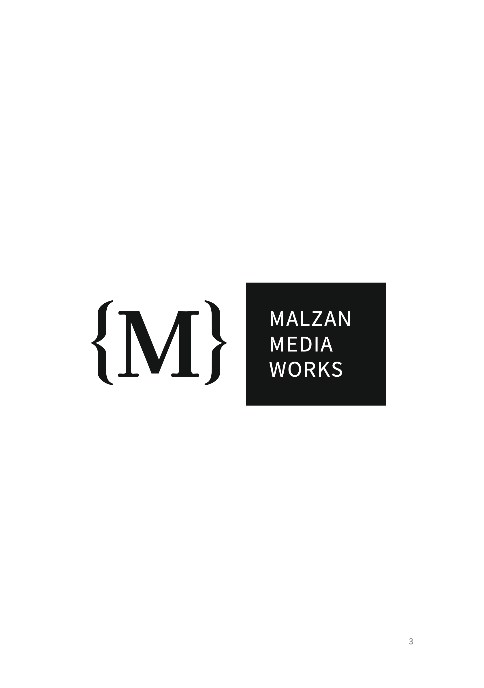
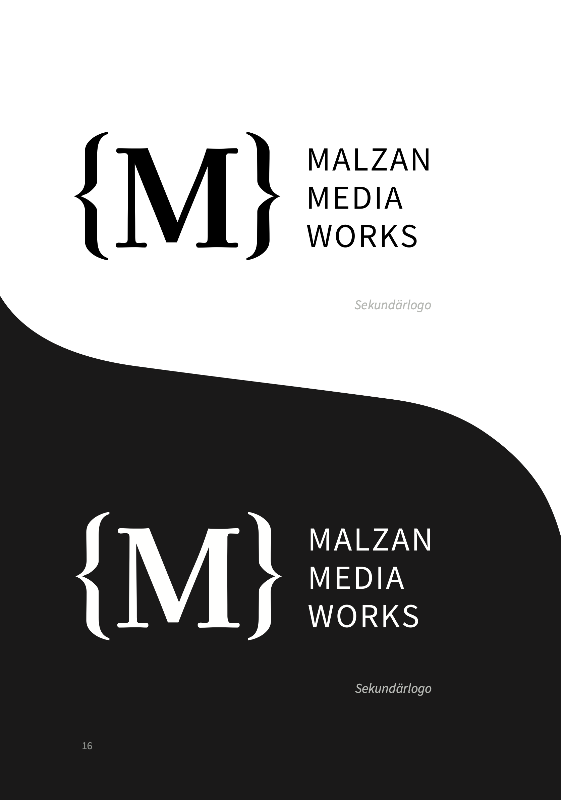
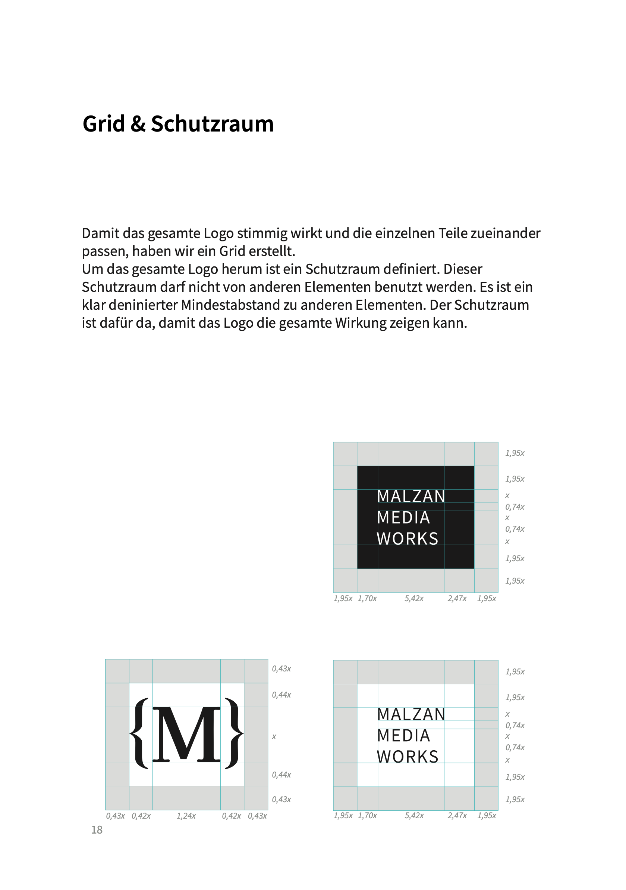
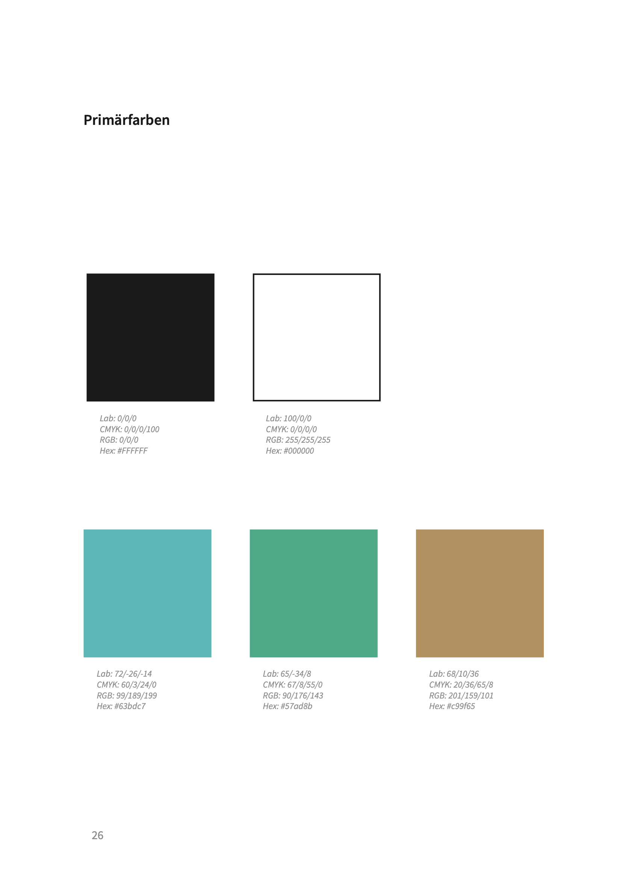
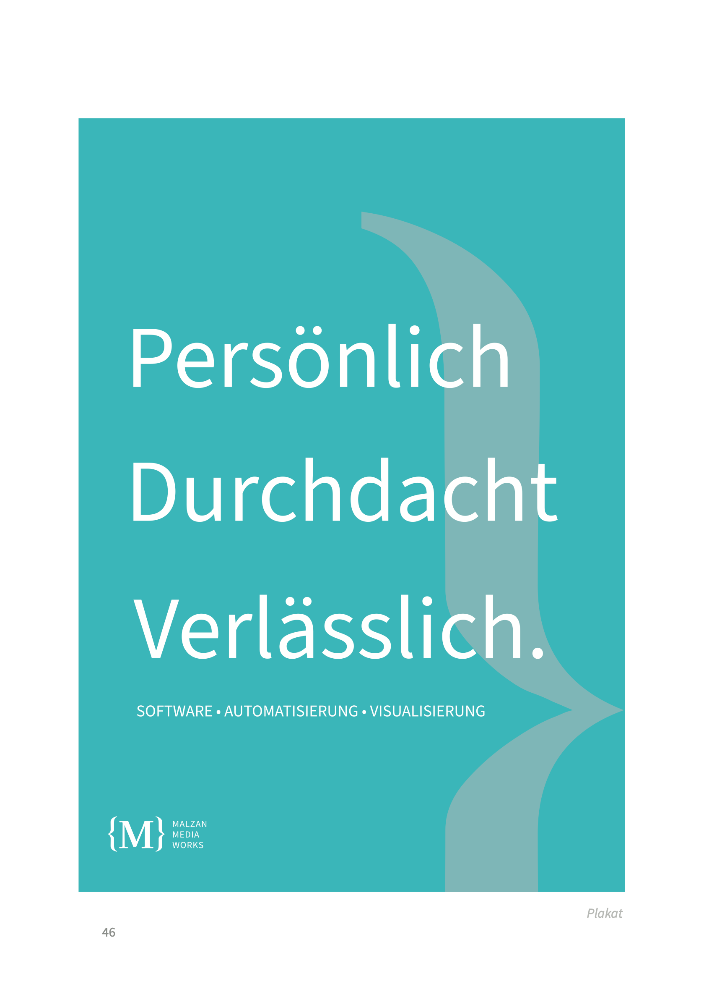
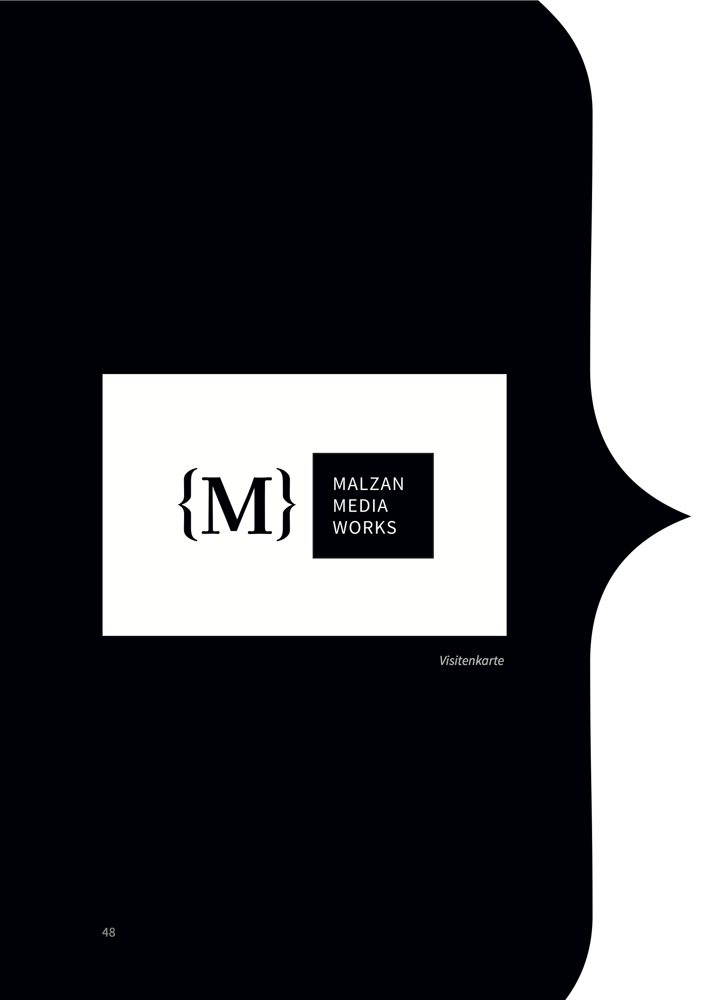

Corporate Design
Im vierten Semester haben wir im Kurs Konzeption digitaler Medien (KDM) in einer Gruppenarbeit ein ganzheitliches Corporate Design für das Unternehmen Malzan MediaWorks entwickelt. Die Arbeit umfasst die Konzeption des Markenauftritts, ein modulares Logo-System mit Schutzraum- und Anwendungsregeln, Farbwelten, Typografie sowie Printmedien und einen interaktiven Web-Prototyp.
Web-Prototyp ansehen ↗




